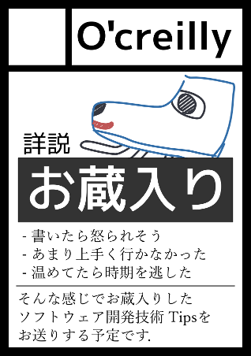

詳説 お蔵入り
本書『詳説 お蔵入り』は， ブログなどに書きそびれて 世に出せなかったノウハウを集めた書籍です．

| タイトル | 詳説 お蔵入り |
|---|---|
| サークル | O'Creilly |
| 仕様 | B5 36ページ |
| 頒布日 | 2015/12/31 |
| 頒布場所 | C89 3日目 東ム51b |
| 価格 | 500円 |
C89 3日目 東ム51b - O'Creilly
本書『詳説 お蔵入り』は， ブログなどに書きそびれて 世に出せなかったノウハウを集めた書籍です．
| タイトル | 詳説 お蔵入り |
|---|---|
| サークル | O'Creilly |
| 仕様 | B5 36ページ |
| 頒布日 | 2015/12/31 |
| 頒布場所 | C89 3日目 東ム51b |
| 価格 | 500円 |